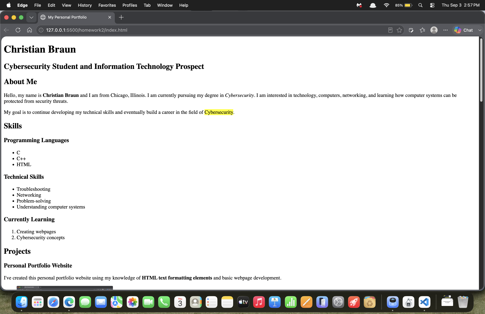
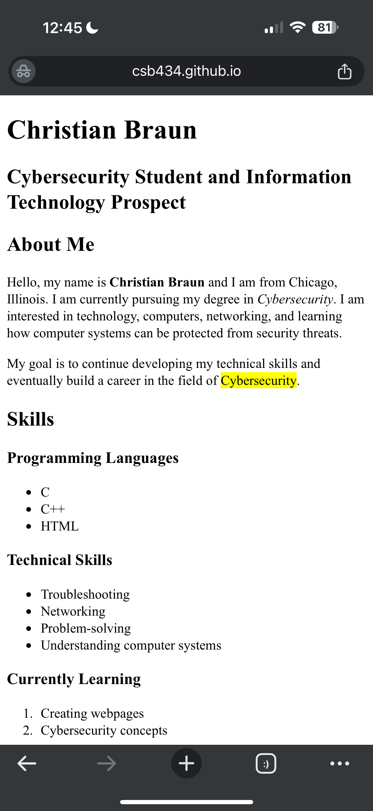
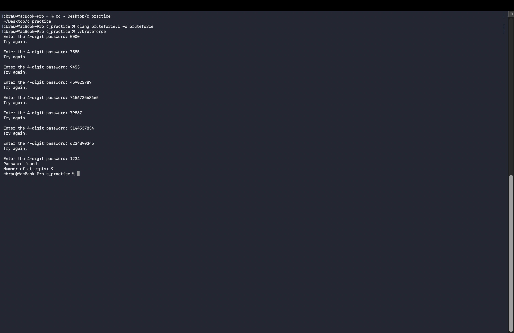
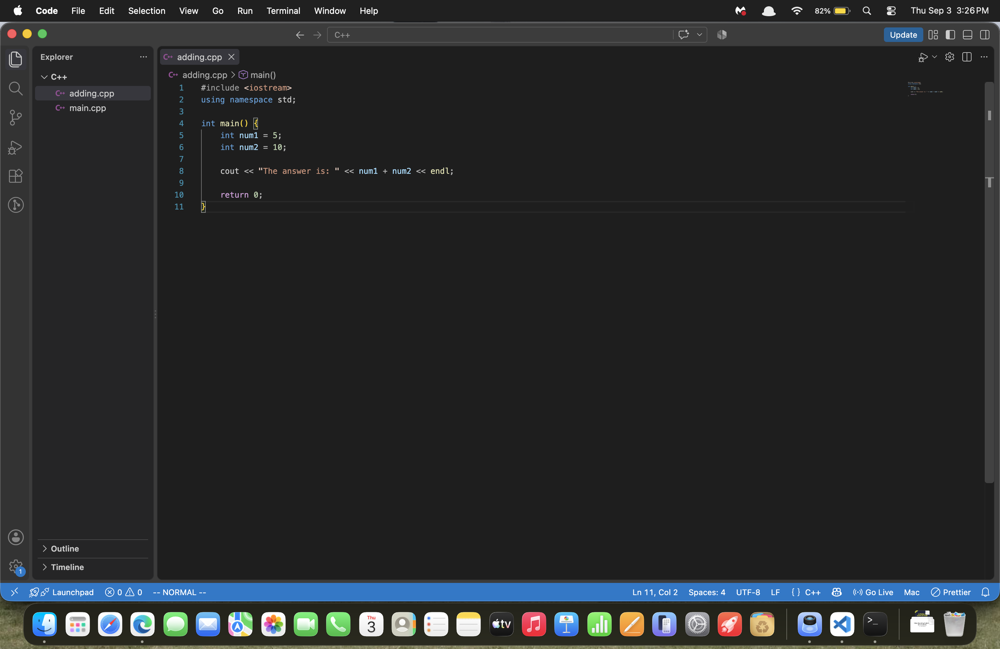

About Me
Hello, my name is Christian Braun and I am from Chicago, Illinois. I am currently pursuing my degree in Cybersecurity. I am interested in technology, computers, networking, and learning how computer systems can be protected from security threats.
My goal is to continue developing my technical skills and eventually build a career in the field of Cybersecurity.
Skills
Programming Languages
- C
- C++
- HTML
Technical Skills
- Troubleshooting
- Networking
- Problem-solving
- Understanding computer systems
Currently Learning
- Creating webpages
- Cybersecurity concepts
Projects
Personal Portfolio Website
I've created this personal portfolio website using my knowledge of HTML text formatting elements and basic webpage development.



C / C++ Programming Exercises
I have completed programming exercises using C and C++. These projects helped me practice my programming skills and problem-solving abilities.


Quick Preview Strip
Education and Experience
| Institution / Company | Degree / Position | Duration |
|---|---|---|
| Northern Arizona University, Flagstaff, AZ | B.S. in Cybersecurity (in progress) | 2026 – Present |
| Steinmetz College Prep, Chicago, IL | High School Diploma | 2015 – 2019 |
| Customer Service / Technical Support | Support Representative | June 2024 – February 2025 |
I am continuously working to improve my Cybersecurity skills.
My Learning Journey
My experience with coding went from
"I have no idea what I'm doing."
to "I'm starting to understand and feel more confident."
My goal is to continue improving my skills by practicing consistently.
I am currently working toward becoming a better webpage developer and technology professional.